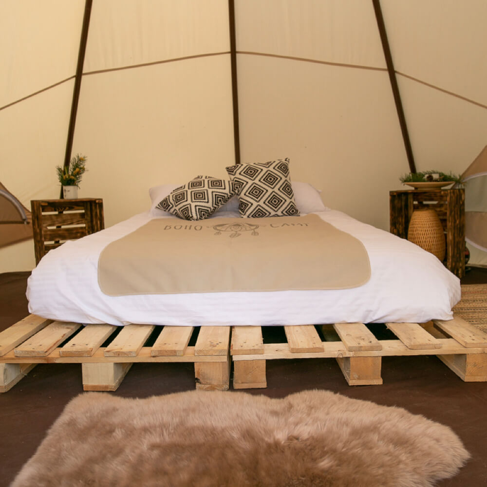
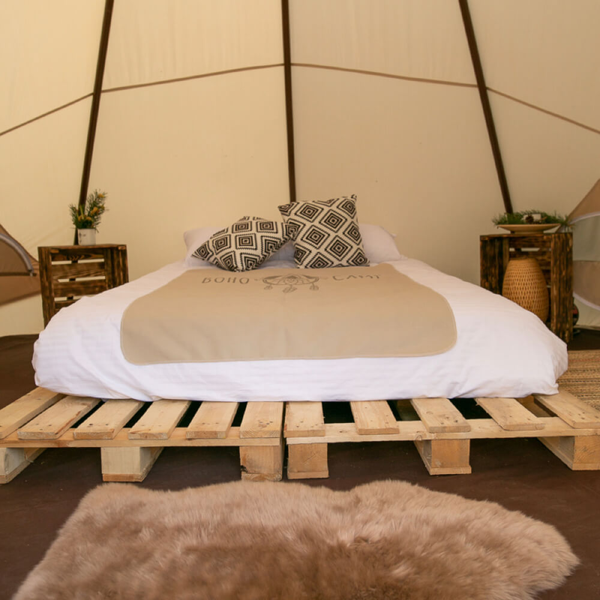

Boho
Красивые палатки
 



BOHO CAMP — это аутентичный глэмпинг, который спрятался от цивилизации среди заповедных лесов и озер на границе Ленинградской области и Карелии. Поселившись в уютных индейских типи, можно познакомиться с современным видом экотуризма и насладиться удивительными пейзажами.
Все шатры выполнены в минималистичном стиле бохо-шик с большим вниманием к деталям: фонари, ловцы снов, свечи и текстиль создают неповторимую атмосферу. На территории глэмпинга можно отдохнуть в лаунж-зоне с удобными креслами и грилем для барбекю, полежать в гамаке, уединиться в пространстве для медитации с видом на пруд или порыбачить.
- Заезд с 16:00, выезд до 14:00
- На всей территории глэмпинга нет доступа к Wi-Fi
- Санузел и душевая находятся на территории глэмпинга и бесплатны для гостей
- На территории глэмпинга есть бесплатная парковка для гостей, заказ пропуска не требуется
- За дополнительную плату гостям также доступны: посещение шатра-ресторана